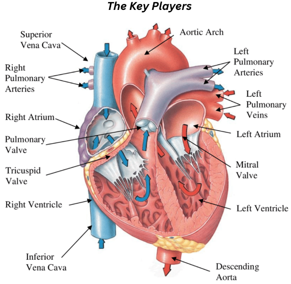
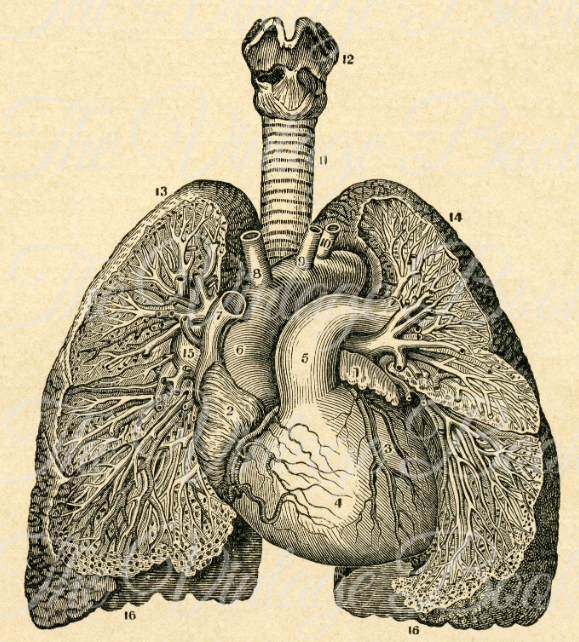

The Cardiovascular System
Author: Pranav Tigura
What is the Cardiovascular System?
Overall, the cardiovascular system is one that focuses on, as the word states, the heart and vascular structure along with their role in the body. Essentially, it looks into how the heart pumps blood and transmits it through the arteries and veins in a, hopefully, neverending process to keep one alive.
Pulmonary Circulation
The story behind pulmonary circulation begins with deoxygenated blood which has to travel to the heart to gain oxygen and nutrients. This travel, overall, has blood travel into the superior and inferior vena cava to the heart's right atrium (think of it as a chamber or room). When this deoxygenated blood reaches the atrium, it flows to the right ventricle (think of it as the more muscular part of the heart) through the tricuspid valve (think of it being made with three separate cusps or pieces).
You must be thinking about it now. What is a valve and why?
The idea behind valves is rooted in blood's composition is a liquid. In simple terms, as the heart beats we have to prevent the blood from flowing backwards and inhibiting our cardiovascular system's natural processes.
It is from here that the deoxygenated blood flows to the lungs to exchange oxygen. This is done with the aid of the pulmonary artery, which also has valves known as pulmonary valves.
Once the blood flows to the lungs, it undergoes a process known as alveolar gas exchange (a process that will be explored in the pulmonary system), yielding oxygenated blood while the CO2 from the deoxygenated blood moves out through the respiratory system. The now oxygenated blood moves back to the heart, specifically the left atrium, through the pulmonary vein.
Systemic Circulation
A follow-up of pulmonary circulation, systemic circulation relies on pulmonary circulation being able to bring oxygen-rich blood to pump to the rest of the body. From the left atrium, the blood flows through yet another valve, the mitral/biscupid valve (think of it as a valve with two parts or cusps). The left ventricle, arguably the most vital part of the heart in systemic circulation, pumps the blood through the aortic valve to the largest artery in the heart, the aorta (think of blood vessels as mail-men and the aorta as the post office, the area where the blood flows through different "tributaries"). The main branches of the heart are the:
- Brachiocephalic Artery:
- Translates to the artery for the arm and head.
- Right Common Carotid
- Relates to the arteries that carry blood to the head and neck.
- Left Common Carotid
- Relates to the arteries that carry blood to the head and neck.
- Left Subclavian Artery
- The artery that is underneath the clavicle, or the collarbone.
These arteries progressively branch out to arterioles (smaller arteries) and eventually, capillaries (small, thin arteries that line organs and tissues).
Arteries vs. Veins
Considering the process we've been talking about, it's easy to say that most of the time, we saw veins working in pulmonary circulation while arteries are working moreso in systemic circulation. However, such a statement is not true as both the arteries and veins work together on the most minute levels. From what we have explored, arteries are working in alveolar exchange while veins are also working at the foundation of systemic circulation, pooling deoxygenated blood to send to the heart. That being said, what is the main difference between arteries and veins anyway?
Arteries
-
Arteries, due to being directly pumped by the heart have higher pressure.
- This is also partially because arteries tend to have a thicker interior lining.
- Arteries are also characterized by ALWAYS flowing away from the heart.
- Arteries have a low volume of blood.
- Wounds to the artery are marked by spurting blood due to such high pressure.
-
Overall arteries are usually noted to be carrying oxygenated blood.
- An exception is the pulmonary artery.
Veins
-
Veins are not directly pumped by the heart, rather they filter into the heart. Thus, they lack high-pressure flow of blood.
- Due to this lack of pressure, veins are prone to the backflow of blood. To prevent this, veins also have valves.
- Overall, the lining of veins is SIGNIFICANTLY thinner.
- Veins have a high volume of blood.
- Veins are characterized by ALWAYS flowing towards the heart.
- Wounds to the veins are marked by constant oozing of blood, due to the high volume of blood present in them.
-
Overall veins are noted to be carrying deoxygenated blood.
- An exception is the pulmonary vein.
Conclusion
Overall, that's an elementary introduction to the cardiovascular system. An important, key aspect of providing nutrition to other systems and upkeeping homeostasis within the body.
The Pulmonary System
An Elementary Review
Author: Pranav Tigura
What is the Pulmonary System?
The pulmonary system, or respiratory system, is one that details the exchange of oxygen and carbon dioxide in maintaining life. The pulmonary system is often closely associated with the cardiovascular system as the cardiovascular system is complementary to it to exchange oxygen through alveolar gas exchange
The system begins with the inspiration/inhalation of oxygen where it flows through the nostril, lined with goblet cells that produce mucus. After the air becomes partially purified, it flows through the paranasal sinuses, air filled space between spongy bone, to become warm and moist. From here, the air flows down the pharynx (throat) to the trachea (windpipe). To prevent any food from getting in the way, the epiglottis, a flap of cartilage, blocks the entrance of any food.
01
Following air's flow through the trachea, it splits at a point known as the carina. Here, the trachea splits into two separate tubules. These tubules are known as the mainstem bronchi, which split into right and left. The lungs envelop the bronchi. The right lung is slightly wider and possesses three lobes: the upper, middle, and lower lobe while the left lung only has the upper and lower lobe.
02
These mainstem bronchi, split into smaller versions of themselves known as bronchioles. These generations of bronchioles begin with the conducting bronchioles. These conducting bronchioles act as conductors of the oxygen inhaled (hence their name). These bronchioles then split into terminal bronchioles, which split further into respiratory bronchioles. Here, the ends of the respiratory bronchioles are capped by alveoli, marking the transition into the alveolar duct.
Alveolar Gas Exchange + The Mucociliary Escalator
The alveoli, which look like small balls or sacs, are lined by cells known as pneumocytes. Specifically, they are lined by type I pneumocytes. Additionally, they are lined with type II pneumocytes which produce surfactant, a lining that reduces the surface tension of the alveoli and ensures it won't collapse on itself. It is at this point that capillaries, which are glued to the pneumocytes through the basal lamina, a structure that lays a foundation for the epithelial cells that line the inside and outside of ALL organs. The oxygen diffuses between this thin, blood-gas barrier and leads to CO2 being expelled through exhalation.
The body is a beautiful machine, at the root of, which is imbued with life at every moment. However, it also acts as a structure that blocks the negative particles and dubious pathogens of the outside world. Often, have you been sick or swallowed something foreign and responded by coughing mucus uncontrollably? The root of this response lies in the mucociliary escalator. The root of this process occurs in the trachea and bronchi which are lined by goblet cells and ciliated columnar cells (cilia stands for hair). The mucus traps the foreign bodies while the ciliated columnar cells push the mucus entrapped particle out through the pharynx, where, ideally, it is spit out.
Medical Methodology
Providing students with the resources to excel.
© Copyright. All Rights Reserved.
Medical Methodology 2022Quick Links
Newsletter
Subscribe so you don't miss out on the latest medical findings and advancements!